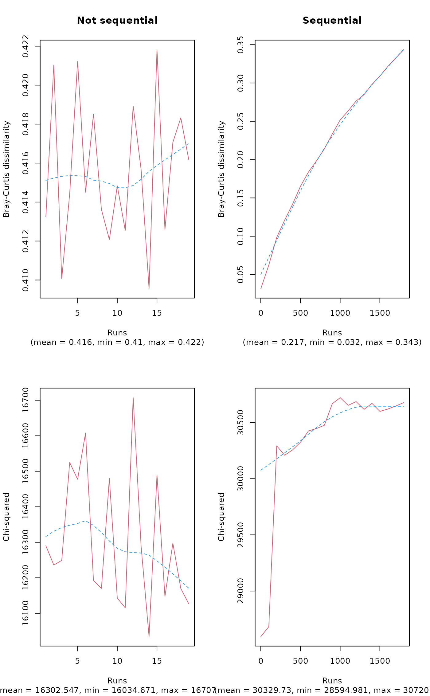
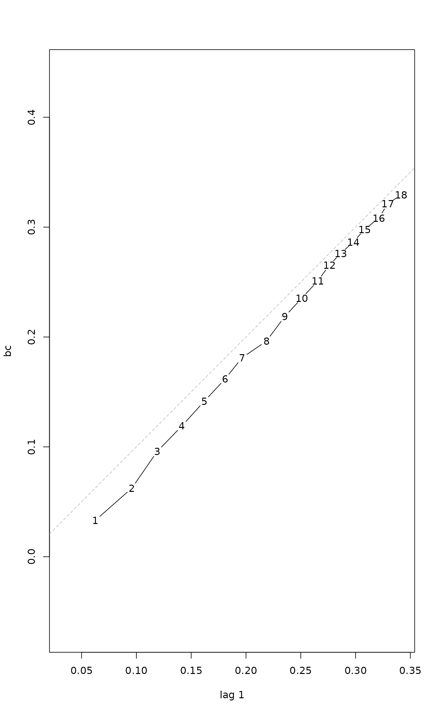
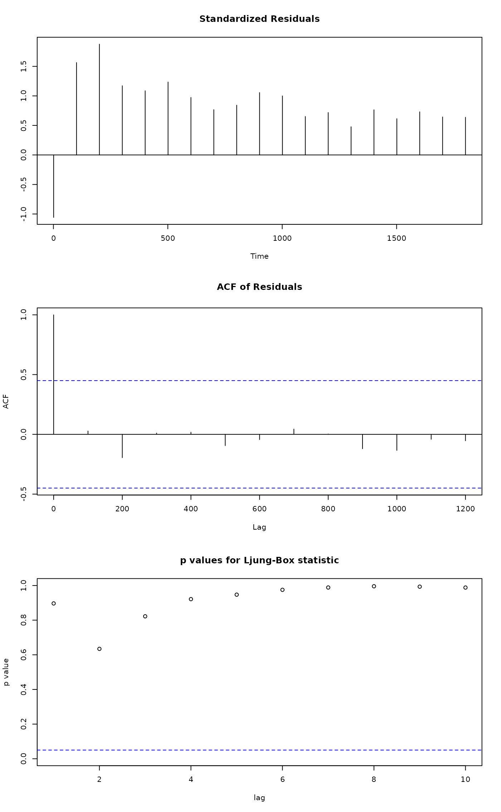

Matrix Permutation Algorithms for Presence-Absence and Count Data
permatfull.RdIndividual (for count data) or incidence (for presence-absence data) based null models can be generated for community level simulations. Options for preserving characteristics of the original matrix (rows/columns sums, matrix fill) and restricted permutations (based on strata) are discussed in the Details section.
Usage
permatfull(m, fixedmar = "both", shuffle = "both", strata = NULL,
mtype = "count", times = 99, ...)
permatswap(m, method = "quasiswap", fixedmar="both", shuffle = "both",
strata = NULL, mtype = "count", times = 99,
burnin = 0, thin = 1, ...)
# S3 method for permat
print(x, digits = 3, ...)
# S3 method for permat
summary(object, ...)
# S3 method for summary.permat
print(x, digits = 2, ...)
# S3 method for permat
plot(x, type = "bray", ylab, xlab, col, lty,
lowess = TRUE, plot = TRUE, text = TRUE, ...)
# S3 method for permat
lines(x, type = "bray", ...)
# S3 method for permat
as.ts(x, type = "bray", ...)
# S3 method for permat
toCoda(x)Arguments
- m
A community data matrix with plots (samples) as rows and species (taxa) as columns.
- fixedmar
character, stating which of the row/column sums should be preserved (
"none", "rows", "columns", "both").- strata
Numeric vector or factor with length same as
nrow(m)for grouping rows within strata for restricted permutations. Unique values or levels are used.- mtype
Matrix data type, either
"count"for count data, or"prab"for presence-absence type incidence data.- times
Number of permuted matrices.
- method
Character for method used for the swap algorithm (
"swap","tswap","quasiswap","backtrack") as described for functionmake.commsim. Ifmtype="count"the"quasiswap","swap","swsh"and"abuswap"methods are available (see details).- shuffle
Character, indicating whether individuals (
"ind"), samples ("samp") or both ("both") should be shuffled, see details.- burnin
Number of null communities discarded before proper analysis in sequential (
"swap", "tswap") methods.- thin
Number of discarded permuted matrices between two evaluations in sequential (
"swap", "tswap") methods.- x, object
Object of class
"permat"- digits
Number of digits used for rounding.
- ylab, xlab, col, lty
graphical parameters for the
plotmethod.- type
Character, type of plot to be displayed:
"bray"for Bray-Curtis dissimilarities,"chisq"for Chi-squared values.- lowess, plot, text
Logical arguments for the
plotmethod, whether a locally weighted regression curve should be drawn, the plot should be drawn, and statistic values should be printed on the plot.- ...
Other arguments passed to
simulate.nullmodelor methods.
Details
The function permatfull is useful when matrix fill is
allowed to vary, and matrix type is count. The fixedmar
argument is used to set constraints for permutation. If none
of the margins are fixed, cells are randomised within the matrix. If
rows or columns are fixed, cells within rows or columns
are randomised, respectively. If both margins are fixed, the
r2dtable function is used that is based on Patefield's
(1981) algorithm. For presence absence data, matrix fill should be
necessarily fixed, and permatfull is a wrapper for the function
make.commsim. The r00, r0, c0, quasiswap
algorithms of make.commsim are used for "none",
"rows", "columns", "both" values of the fixedmar argument,
respectively
The shuffle argument only have effect if the mtype =
"count" and permatfull function is used with "none",
"rows", "columns" values of fixedmar. All other cases for
count data are individual based randomisations. The "samp" and
"both" options result fixed matrix fill. The "both"
option means that individuals are shuffled among non zero cells
ensuring that there are no cell with zeros as a result, then cell
(zero and new valued cells) are shuffled.
The function permatswap is useful when with matrix fill
(i.e. the proportion of empty cells) and row/columns sums should be
kept constant. permatswap uses different kinds of swap
algorithms, and row and columns sums are fixed in all cases. For
presence-absence data, the swap and tswap methods of
make.commsim can be used. For count data, a special
swap algorithm ('swapcount') is implemented that results in permuted
matrices with fixed marginals and matrix fill at the same time.
The 'quasiswapcount' algorithm (method="quasiswap" and
mtype="count") uses the same trick as Carsten Dormann's
swap.web function in the package
bipartite. First, a random matrix is generated by the
r2dtable function retaining row and column sums. Then
the original matrix fill is reconstructed by sequential steps to
increase or decrease matrix fill in the random matrix. These steps are
based on swapping 2x2 submatrices (see 'swapcount' algorithm for
details) to maintain row and column totals. This algorithm generates
independent matrices in each step, so burnin and thin
arguments are not considered. This is the default method, because this
is not sequential (as swapcount is) so independence of subsequent
matrices does not have to be checked.
The swapcount algorithm (method="swap" and
mtype="count") tries to find 2x2 submatrices (identified by 2
random row and 2 random column indices), that can be swapped in order
to leave column and row totals and fill unchanged. First, the
algorithm finds the largest value in the submatrix that can be swapped
(\(d\)) and whether in diagonal or antidiagonal way. Submatrices
that contain values larger than zero in either diagonal or
antidiagonal position can be swapped. Swap means that the values in
diagonal or antidiagonal positions are decreased by \(d\), while
remaining cells are increased by \(d\). A swap is made only if fill
doesn't change. This algorithm is sequential, subsequent matrices are
not independent, because swaps modify little if the matrix is
large. In these cases many burnin steps and thinning is needed to get
independent random matrices. Although this algorithm is implemented in
C, large burnin and thin values can slow it down
considerably. WARNING: according to simulations, this algorithm seems
to be biased and non random, thus its use should be avoided!
The algorithm "swsh" in the function permatswap is a
hybrid algorithm. First, it makes binary quasiswaps to keep row and
column incidences constant, then non-zero values are modified
according to the shuffle argument (only "samp" and
"both" are available in this case, because it is applied only
on non-zero values). It also recognizes the fixedmar
argument which cannot be "both" (vegan versions <= 2.0
had this algorithm with fixedmar = "none").
The algorithm "abuswap" produces two kinds of null models
(based on fixedmar="columns" or fixedmar="rows") as
described in Hardy (2008; randomization scheme 2x and 3x,
respectively). These preserve column and row occurrences, and column
or row sums at the same time. (Note that similar constraints
can be achieved by the non sequential "swsh" algorithm
with fixedmar argument set to "columns" or
"rows", respectively.)
Constraints on row/column sums, matrix fill, total sum and sums within
strata can be checked by the summary method. plot method
is for visually testing the randomness of the permuted matrices,
especially for the sequential swap algorithms. If there are any
tendency in the graph, higher burnin and thin values can
help for sequential methods. New lines can be added to existing plot
with the lines method.
Unrestricted and restricted permutations: if strata is
NULL, functions perform unrestricted permutations. Otherwise,
it is used for restricted permutations. Each strata should contain at
least 2 rows in order to perform randomization (in case of low row
numbers, swap algorithms can be rather slow). If the design is not
well balanced (i.e. same number of observations within each stratum),
permuted matrices may be biased because same constraints are forced on
submatrices of different dimensions. This often means, that the number
of potential permutations will decrease with their dimensions. So the
more constraints we put, the less randomness can be expected.
The plot method is useful for graphically testing for trend and
independence of permuted matrices. This is especially important when
using sequential algorithms ("swap", "tswap", "abuswap").
The as.ts method can be used to extract Bray-Curtis
dissimilarities or Chi-squared values as time series. This can further
used in testing independence (see Examples). The method toCoda
is useful for accessing diagnostic tools available in the coda
package.
Value
Functions permatfull and permatswap return an
object of class "permat" containing the the function call
(call), the original data matrix used for permutations
(orig) and a list of permuted matrices with length times
(perm).
The summary method returns various statistics as a list
(including mean Bray-Curtis dissimilarities calculated pairwise among
original and permuted matrices, Chi-square statistics, and check
results of the constraints; see Examples). Note that when
strata is used in the original call, summary calculation may
take longer.
The plot creates a plot as a side effect.
The as.ts method returns an object of class "ts".
References
Original references for presence-absence algorithms are
given on help page of make.commsim.
Hardy, O. J. (2008) Testing the spatial phylogenetic structure of local communities: statistical performances of different null models and test statistics on a locally neutral community. Journal of Ecology 96, 914--926.
Patefield, W. M. (1981) Algorithm AS159. An efficient method of generating r x c tables with given row and column totals. Applied Statistics 30, 91--97.
Author
Péter Sólymos, solymos@ualberta.ca and Jari Oksanen
Examples
## A simple artificial community data matrix.
m <- matrix(c(
1,3,2,0,3,1,
0,2,1,0,2,1,
0,0,1,2,0,3,
0,0,0,1,4,3
), 4, 6, byrow=TRUE)
## Using the quasiswap algorithm to create a
## list of permuted matrices, where
## row/columns sums and matrix fill are preserved:
x1 <- permatswap(m, "quasiswap")
summary(x1)
#> Summary of object of class 'permat'
#>
#> Call: permatswap(m = m, method = "quasiswap")
#>
#> Matrix type: count
#> Permutation type: swap
#> Method: quasiswap_count, burnin: 0, thin: 1
#> Restricted: FALSE
#> Fixed margins: both
#>
#> Matrix dimensions: 4 rows, 6 columns
#> Sum of original matrix: 30
#> Fill of original matrix: 0.62
#> Number of permuted matrices: 99
#>
#> Matrix sums retained: 100 %
#> Matrix fill retained: 100 %
#> Row sums retained: 100 %
#> Column sums retained: 100 %
#> Row incidences retained: 1.01 %
#> Column incidences retained: 13.13 %
#>
#> Bray-Curtis dissimilarities among original and permuted matrices:
#> Min. 1st Qu. Median Mean 3rd Qu. Max.
#> 0.2000 0.3667 0.4333 0.4145 0.4667 0.6000
#>
#> Chi-squared for original matrix: 18.55
#> Chi-squared values among expected and permuted matrices:
#> Min. 1st Qu. Median Mean 3rd Qu. Max.
#> 16.27 19.59 21.10 21.51 23.36 31.69
## Unrestricted permutation retaining
## row/columns sums but not matrix fill:
x2 <- permatfull(m)
summary(x2)
#> Summary of object of class 'permat'
#>
#> Call: permatfull(m = m)
#>
#> Matrix type: count
#> Permutation type: full
#> Method: r2dtable
#> Restricted: FALSE
#> Fixed margins: both
#>
#> Matrix dimensions: 4 rows, 6 columns
#> Sum of original matrix: 30
#> Fill of original matrix: 0.62
#> Number of permuted matrices: 99
#>
#> Matrix sums retained: 100 %
#> Matrix fill retained: 16.16 %
#> Row sums retained: 100 %
#> Column sums retained: 100 %
#> Row incidences retained: 0 %
#> Column incidences retained: 1.01 %
#>
#> Bray-Curtis dissimilarities among original and permuted matrices:
#> Min. 1st Qu. Median Mean 3rd Qu. Max.
#> 0.2000 0.3333 0.3667 0.3865 0.4333 0.6333
#>
#> Chi-squared for original matrix: 18.55
#> Chi-squared values among expected and permuted matrices:
#> Min. 1st Qu. Median Mean 3rd Qu. Max.
#> 7.824 12.046 15.660 16.015 19.413 28.132
## Unrestricted permutation of presence-absence type
## not retaining row/columns sums:
x3 <- permatfull(m, "none", mtype="prab")
x3$orig ## note: original matrix is binarized!
#> [,1] [,2] [,3] [,4] [,5] [,6]
#> [1,] 1 1 1 0 1 1
#> [2,] 0 1 1 0 1 1
#> [3,] 0 0 1 1 0 1
#> [4,] 0 0 0 1 1 1
summary(x3)
#> Summary of object of class 'permat'
#>
#> Call: permatfull(m = m, fixedmar = "none", mtype = "prab")
#>
#> Matrix type: prab
#> Permutation type: full
#> Method: r00
#> Restricted: FALSE
#> Fixed margins: none
#> Individuals and samples are shuffled
#>
#> Matrix dimensions: 4 rows, 6 columns
#> Sum of original matrix: 15
#> Fill of original matrix: 0.62
#> Number of permuted matrices: 99
#>
#> Matrix sums retained: 100 %
#> Matrix fill retained: 100 %
#> Row sums retained: 4.04 %
#> Column sums retained: 0 %
#> Row incidences retained: 4.04 %
#> Column incidences retained: 0 %
#>
#> Bray-Curtis dissimilarities among original and permuted matrices:
#> Min. 1st Qu. Median Mean 3rd Qu. Max.
#> 0.2000 0.3333 0.4000 0.3852 0.4000 0.5333
#>
#> Chi-squared for original matrix: 8.4
#> Chi-squared values among expected and permuted matrices:
#> Min. 1st Qu. Median Mean 3rd Qu. Max.
#> 8.812 13.583 15.208 15.295 17.083 21.896
## Restricted permutation,
## check sums within strata:
x4 <- permatfull(m, strata=c(1,1,2,2))
summary(x4)
#> Summary of object of class 'permat'
#>
#> Call: permatfull(m = m, strata = c(1, 1, 2, 2))
#>
#> Matrix type: count
#> Permutation type: full
#> Method: r2dtable
#> Restricted: TRUE
#> Fixed margins: both
#>
#> Matrix dimensions: 4 rows, 6 columns
#> Sum of original matrix: 30
#> Fill of original matrix: 0.62
#> Number of permuted matrices: 99
#>
#> Matrix sums retained: 100 %
#> Matrix fill retained: 38.38 %
#> Row sums retained: 100 %
#> Column sums retained: 100 %
#> Row incidences retained: 1.01 %
#> Column incidences retained: 2.02 %
#> Sums within strata retained: 100 %
#>
#> Bray-Curtis dissimilarities among original and permuted matrices:
#> Min. 1st Qu. Median Mean 3rd Qu. Max.
#> 0.06667 0.20000 0.26667 0.23502 0.26667 0.46667
#>
#> Chi-squared for original matrix: 18.55
#> Chi-squared values among expected and permuted matrices:
#> Min. 1st Qu. Median Mean 3rd Qu. Max.
#> 14.21 18.68 21.05 22.09 25.26 36.50
## NOTE: 'times' argument usually needs to be >= 99
## here much lower value is used for demonstration
## Not sequential algorithm
data(BCI)
a <- permatswap(BCI, "quasiswap", times=19)
## Sequential algorithm
b <- permatswap(BCI, "abuswap", fixedmar="col",
burnin=0, thin=100, times=19)
opar <- par(mfrow=c(2,2))
plot(a, main="Not sequential")
plot(b, main="Sequential")
plot(a, "chisq")
plot(b, "chisq")

par(opar)
## Extract Bray-Curtis dissimilarities
## as time series
bc <- as.ts(b)
## Lag plot
lag.plot(bc)

## First order autoregressive model
mar <- arima(bc, c(1,0,0))
mar
#>
#> Call:
#> arima(x = bc, order = c(1, 0, 0))
#>
#> Coefficients:
#> ar1 intercept
#> 0.9915 0.1850
#> s.e. 0.0120 0.1374
#>
#> sigma^2 estimated as 0.000346: log likelihood = 46.71, aic = -87.42
## Ljung-Box test of residuals
Box.test(residuals(mar))
#>
#> Box-Pierce test
#>
#> data: residuals(mar)
#> X-squared = 0.35725, df = 1, p-value = 0.55
#>
## Graphical diagnostics
tsdiag(mar)
